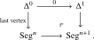
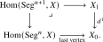
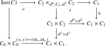
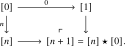
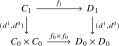
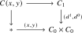
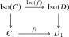
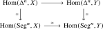

Having proved that the Rezk nerve is fully faithful, we turn to the conditions that characterize its essential image. The Segal condition expresses that a simplex is determined by its consecutive edges: every string of composable morphisms extends uniquely to a simplex. This gives a simplicial anima a composition law, with associativity and unit coherences supplied by its higher simplices. Univalence is the corresponding Rezk condition, relating identifications of objects to isomorphisms.
We construct the spine \(\segal{n}\) by gluing \(n\) edges end to end, and use it to formulate the Segal condition directly. We then define Segal animae and univalence, and verify that every Rezk nerve satisfies both conditions. The section ends with Corollary 15.2.13: a morphism of univalent Segal animae is an equivalence precisely when it is fully faithful and essentially surjective. The converse characterization of Rezk nerves will follow from the construction of Rezk completion later in the chapter.
Construction 15.2.1 (The spine of a simplex). The spine \(\segal{n}\) is the simplicial anima obtained by gluing
\(n\) copies of \(\Delta^1\) end to end. More precisely, set
\(\segal{0}=\Delta^0\), with its unique vertex as last vertex, and define
\(\segal{n+1}\) by the pushout square

There is a canonical map \(i_n\colon\segal{n}\to\Delta^n\), sending each edge to the corresponding consecutive edge of \(\Delta^n\). Inductively, \(i_0\) is the identity, and \(i_{n+1}\) is induced by the composite \(\segal{n}\to\Delta^n\to\Delta^{n+1}\) and the last edge \(\Delta^1\to\Delta^{n+1}\). The latter is induced by \[ [1]=[0]\star[0]\longrightarrow[n]\star[0]=[n+1], \] using the last vertex of \([n]\) on the first factor and the identity on the second. The two maps agree on the gluing vertex, and \(i_{n+1}\) preserves the last vertex.
Definition 15.2.2. A Segal anima is a functor \(C\colon\simp\catop\to\An\) such that, for each \(n : \N\), the map \(i_n\colon\segal{n}\to\Delta^n\) induces an equivalence \[ \Hom(\Delta^n,C)\iso\Hom(\segal{n},C)\, . \] We write \(\Seg(\An)\subseteq\PSh(\simp)\) for the full subcategory spanned by the Segal animae.
Lemma 15.2.3. For every simplicial anima \(X\) and \(n : \N\), there is a canonical
pullback square

Proof
Apply \(\Hom(-,X)\) to the pushout defining \(\segal{n+1}\) and use Yoneda.
Remark 15.2.4. It follows by induction that \[ \Hom(\segal{n},X)\simeq \underset{\text{$n$ times}}{\underbrace{X_1\times_{X_0}\cdots\times_{X_0}X_1}}. \] Here the product with no factors is \(X_0\), and each new factor is attached by identifying the target of the preceding edge with its source. Thus the Segal condition says precisely that the consecutive edges induce an equivalence from \(X_n\) to the anima of composable strings of \(n\) morphisms.
Construction 15.2.5. Let \(C\) be a Segal anima. An object of \(C\) is a term of \(C_0\). A morphism of \(C\) simply is a term of \(C_1\). We define the composition law of morphisms in \(C\) as the composition of the inverse of the equivalence \[ C_2=\Hom(\Delta^2,C)\iso\Hom(\segal{2},C)\simeq C_1\times_{C_0}C_1 \] with the map \[ d^1\colon C_2\to C_1\, . \] This defines a morphism \[ C_1\times_{C_0}C_1\to C_1\ , \quad (f,g)\mapsto g\circ f\, . \] Thus, if \(\sigma:C_2\) denotes the unique \(2\)-simplex whose spine is \((f,g)\), we have \(g \circ f = d_1(\sigma)\).
A morphism \(f\colon x\to y\) in \(C\) is a term \(f : C_1\) with identifications of the form \(s : d^1(f)=x\) and \(t : d^0(f)=y\). For instance, given any object \(x\) of \(C\), there is the morphism \(\id_x\colon x\to x\) defined as the image of \(x : C_0\) through the map \(C_0\to C_1\) induced by \(\Delta^1\to\Delta^0\). The Segal equivalence in degree \(3\) associates to any composable triple \[ x\xrightarrow{f}y\xrightarrow{g}z\xrightarrow{h}t \] a unique \(3\)-simplex. Applying its face maps in the two possible orders identifies the two composites and gives \[ a_{f,g,h}\colon (h\circ g)\circ f=h\circ(g\circ f). \] Likewise, the degenerate \(2\)-simplices give the left and right unit identifications \(\id_y\circ f=f\) and \(f\circ\id_x=f\). The unique \(4\)-simplex associated to four composable morphisms gives the pentagon coherence for \(a\), while the degenerate \(3\)-simplices give the triangle coherences involving the unit identifications. We will use these identifications and coherences without further mention.
A morphism \(f\colon x\to y\) in \(C\) is an isomorphism if there are morphisms
\(g\colon y\to x\) and \(h\colon y\to x\) together with identifications of the form
\[
l : g\circ f=\id_x\quad\text{and}\quad r : f\circ h=\id_y\, .
\]
Isomorphisms form an anima \(\Iso(C)\) equipped with a forgetful map
\[
\Iso(C)\to C_1\ , \quad (f,g,h,l,r)\mapsto f
\]
and there is a canonical proof that \(\id_x\) is an isomorphism in \(x\), yielding a canonical map
\[
\id\colon C_0\to\Iso(C)\, .
\]
More precisely, \(\Iso(C)\) is defined through the following diagram.

Lemma 15.2.6. Let \(C\) be a Segal anima, let \(u\colon x\to y\) be an isomorphism, and let \(z\) be an object of \(C\). Composition with \(u\) induces equivalences \[ u^*\colon C(y,z)\iso C(x,z), \qquad v\longmapsto v\circ u, \] and \[ u_*\colon C(z,x)\iso C(z,y), \qquad v\longmapsto u\circ v. \]
Proof
Choose a left inverse \(v\colon y\to x\) and a right inverse \(w\colon y\to x\) for \(u\). The associativity and unit identifications give \[ v=v\circ\id_y=v\circ(u\circ w) =(v\circ u)\circ w=\id_x\circ w=w. \] Thus the left and right inverses agree; denote their common value by \(u^{-1}\). Precomposition with \(u^{-1}\) is inverse to \(u^*\), and postcomposition with \(u^{-1}\) is inverse to \(u_*\). The required identifications again follow from associativity and the unit laws.
Definition 15.2.7. A Segal anima \(C\) is univalent (or complete) if the map \(\id\colon C_0\to\Iso(C)\) is an equivalence. We write \(\USeg(\An)\subseteq\Seg(\An)\) for the full subcategory spanned by the univalent Segal animae.
Equivalently, \(C\) is univalent if, for every \(x,y : C_0\), the canonical map \[ (x=y)\longrightarrow (x\iso y) \] is an equivalence. Indeed, these maps are the fibers of \(\id\colon C_0\to\Iso(C)\) over \(C_0\times C_0\), where \(C_0\) maps to the product by the diagonal and \(\Iso(C)\) by source and target. This explains the term univalence; the traditional name for the same condition is Rezk completeness.
Example 15.2.8. For any small category \(C : \Cat^\simeq\), the Rezk nerve \(N(C)\) is a univalent Segal anima.
Proof
Since \(n\) is terminal in \([n]\), a cocone on \(F\colon[n]\to C\) with
vertex \(y\) is determined by a morphism \(F(n)\to y\), by
Proposition 4.4.4. The mapping property of
the join, Remark 3.6.1, therefore gives the pushout
square

Definition 15.2.9. A morphism of simplicial animae \(f\colon C\to D\) is fully faithful if the induced
square

A morphism of Segal animae is a Dwyer–Kan equivalence if it is both fully faithful and essentially surjective.
Remark 15.2.10. If \(C\) is a Segal anima and \(x,y : C\) are two objects, the collection \(C(x,y)\)
of morphisms from \(x\) to \(y\) in \(C\) fits in the pullback square below.

Lemma 15.2.11. If \(f\colon C\to D\) is a fully faithful morphism of Segal animae, then
there is a canonical pullback square of the form:

Proof
Since all four terms in the square are animae, the vertical maps are right fibrations. By Corollary 6.1.13, it therefore suffices to check the square on fibers. Let \(u\colon x\to y\) be a morphism in \(C\), in an arbitrary anima context. By the construction of \(\Iso(C)\), the fiber of \(\Iso(C)\to C_1\) over \(u\) is the anima of choices of a left and a right inverse for \(u\), together with the corresponding identifications: \[ \left(\sum_{g : C(y,x)}g\circ u=\id_x\right) \times \left(\sum_{h : C(y,x)}u\circ h=\id_y\right). \] Since \(f\) is fully faithful, it induces equivalences on all the hom animae appearing in this expression. These equivalences preserve identities and composition, and hence identify the displayed anima with the corresponding anima of inverse data for \(f(u)\) in \(D\). Thus the square induces an equivalence on every fiber and is a pullback square.
Proposition 15.2.12. A morphism of Segal animae \(f\colon X\to Y\) is an equivalence if and only if it is fully faithful and induces an equivalence \(f_0\colon X_0\iso Y_0\).
Proof
An equivalence is levelwise an equivalence, so the condition is necessary.
Conversely, if \(f\colon X\to Y\) is fully faithful and induces an equivalence
\(f_0\colon X_0\iso Y_0\), then it induces an equivalence
\[
f_1\colon X_1\iso Y_1
\]
as well: \(f_1\) is then a pullback of the equivalence \(f_0\times f_0\).
This implies right away that \(f\) induces an equivalence of the form
\[
\underset{\text{$n$ times}}{\underbrace{X_1\times_{X_0}\cdots\times_{X_0}X_1}}
\iso\underset{\text{$n$ times}}{\underbrace{Y_1\times_{Y_0}\cdots\times_{Y_0}Y_1}}\, .
\]
The commutative square

Corollary 15.2.13. A morphism of univalent Segal animae is an equivalence if and only if it is a Dwyer–Kan equivalence.
Proof
An equivalence is fully faithful and essentially surjective, so the condition
is necessary.
Let \(f\colon C\to D\) be a Dwyer–Kan equivalence
between univalent Segal animae.
By virtue of Proposition 15.2.12,
it suffices to prove that \(f_0\colon C_0\to D_0\) is an equivalence.
It suffices to check that \(f_0\) is both a cover and an embedding
(see Proposition 11.2.10).
We consider the following commutative diagram.
 The upper square is cartesian because its two vertical maps are equivalences
(since \(C\) and \(D\) are univalent). The lower square is cartesian because \(f\)
is fully faithful.
The middle square is a pullback square as well by Lemma 15.2.11.
Therefore, the outer square is cartesian, which proves that \(f_0\) is an embedding.
It remains to show that \(f_0\) is a cover. Let
\[
P:=C_0\times_{f_0,D_0,s}\Iso(D),
\]
where \(s\colon\Iso(D)\to D_0\) sends an isomorphism to its source. Thus an object
of \(P\) is a pair \((x,u)\) consisting of an object \(x : C_0\) and an isomorphism
\(u\colon f(x)\iso y\) in \(D\). We have a triangle
The upper square is cartesian because its two vertical maps are equivalences
(since \(C\) and \(D\) are univalent). The lower square is cartesian because \(f\)
is fully faithful.
The middle square is a pullback square as well by Lemma 15.2.11.
Therefore, the outer square is cartesian, which proves that \(f_0\) is an embedding.
It remains to show that \(f_0\) is a cover. Let
\[
P:=C_0\times_{f_0,D_0,s}\Iso(D),
\]
where \(s\colon\Iso(D)\to D_0\) sends an isomorphism to its source. Thus an object
of \(P\) is a pair \((x,u)\) consisting of an object \(x : C_0\) and an isomorphism
\(u\colon f(x)\iso y\) in \(D\). We have a triangle
 with \(p(x,u)=x\) and \(q(x,u)=y\). Since \(D\) is univalent, its source and target
maps \(s,t\colon\Iso(D)\to D_0\) are both inverse to the equivalence
\(\id\colon D_0\to\Iso(D)\), and are therefore isomorphic. Consequently,
\(q = f_0p\). The map \(q\) is a cover by the essential surjectivity of \(f\),
so \(f_0p\) is a cover as well. It follows from the cancellation property of covers,
Corollary 11.2.7, that \(f_0\) is a cover. Hence \(f_0\) is an
equivalence by Proposition 11.2.10, which finishes
the proof by Proposition 15.2.12.
with \(p(x,u)=x\) and \(q(x,u)=y\). Since \(D\) is univalent, its source and target
maps \(s,t\colon\Iso(D)\to D_0\) are both inverse to the equivalence
\(\id\colon D_0\to\Iso(D)\), and are therefore isomorphic. Consequently,
\(q = f_0p\). The map \(q\) is a cover by the essential surjectivity of \(f\),
so \(f_0p\) is a cover as well. It follows from the cancellation property of covers,
Corollary 11.2.7, that \(f_0\) is a cover. Hence \(f_0\) is an
equivalence by Proposition 11.2.10, which finishes
the proof by Proposition 15.2.12.